import numpy as np
import pandas as pd
import matplotlib.pyplot as plt
from sklearn.datasets import make_blobs, make_moons, load_wine
from sklearn.cluster import KMeans
from sklearn.decomposition import PCA
from sklearn.metrics import silhouette_score, adjusted_rand_score
from sklearn.preprocessing import StandardScaler
from sklearn.pipeline import make_pipeline
rng = np.random.default_rng(657677)23 K-means
This lecture focuses on clustering, and in particular on one of the simplest and most widely used clustering methods: k-means.
Let
\[ X = \begin{bmatrix} - & x_1^T & - \\ - & x_2^T & - \\ & \vdots & \\ - & x_N^T & - \end{bmatrix} \in \mathbb{R}^{N \times D}. \]
Here each row is one observation, and each column is one measured variable.
In supervised learning, we often start from a loss function
\[ \ell(y,s(x)) \]
because we have a target value \(y\). In unsupervised learning, we do not have such a target. So we usually define a criterion that expresses the kind of structure we want to find.
For clustering, the structure we want is a partition of the data into groups. Informally, points in the same group should be close to each other, and points in different groups should be far apart.
23.1 A first clustering example
To make the problem concrete, start with simulated data in two dimensions. The labels used to simulate the data will not be used by the clustering algorithm. They are only included so that we can check what happens.
X, true_labels = make_blobs(
n_samples=300,
centers=3,
cluster_std=0.75,
random_state=657677
)
plt.figure(figsize=(6, 5))
plt.scatter(X[:, 0], X[:, 1], s=30, alpha=0.8)
plt.xlabel("$x_1$")
plt.ylabel("$x_2$")
plt.title("Unlabeled data")
plt.tight_layout()
plt.show()
The clustering algorithm only sees the point cloud. It does not know the colors, classes, or generating mechanism. It receives only the matrix \(X\).
A clustering method returns two objects:
- a cluster assignment for each observation;
- a summary of each cluster.
For k-means, the summary of a cluster is its centroid (typically their average location).
23.2 The k-means objective
Fix a number of clusters \(K\). K-means tries to find:
- cluster assignments
\[ c_1,\ldots,c_N \in \{1,\ldots,K\}, \] for each of the data points,
- and cluster centroids
\[ \mu_1,\ldots,\mu_K \in \mathbb{R}^D, \] for each of the $K clusters.
In particular, \(K\)-means will try to find centroids that minimize the within-cluster squared distance:
\[ \min_{c_1,\ldots,c_N,\;\mu_1,\ldots,\mu_K} \sum_{n=1}^N \|x_n - \mu_{c_n}\|_2^2. \]
Equivalently,
\[ \min_{c,\mu} \sum_{k=1}^K \sum_{n:c_n=k} \|x_n - \mu_k\|_2^2. \]
This objective is called the within-cluster sum of squares. In sklearn, it is called the inertia.
The objective says that each point should be close to the centroid of its assigned cluster.
The full k-means problem is hard because we need to choose assignments and centroids at the same time. This is a discrete optimization problem that has combinatorical complexity. However: if we fix one part, the other part is easy. That is, its hard to jointly optimize over both \(c\) and \(\mu\), however if we fix one, the other is easy to optimize over.
Fact 1: Given centroids \(\mu\), the best assignment \(c\) is the nearest centroid.
If the centroids \(\mu_1,\ldots,\mu_K\) are fixed, then each point should be assigned to the closest centroid:
\[ c_n= \arg\min_{k \in \{1,\ldots,K\}} \|x_n - \mu_k\|_2^2. \]
Fact 2: Given assignments \(c\), the best centroid \(\mu\) is the sample mean.
If the assignments are fixed, then the \(k\)th centroid solves
\[ \mu_k= \arg\min_{\mu \in \mathbb{R}^D} \sum_{n:c_n=k} \|x_n - \mu\|_2^2. \]
Taking the gradient gives
\[ \nabla_\mu \sum_{n:c_n=k} \|x_n - \mu\|_2^2= 2\sum_{n:c_n=k}(\mu - x_n). \]
Setting this equal to zero gives
\[ \mu_k= \frac{1}{N_k} \sum_{n:c_n=k} x_n, \]
where
\[ N_k = |\{n:c_n=k\}| \] is the number of points in cluster \(k\).
So the best centroid is the average of the points assigned to that cluster.
We can combine these two facts to approximate a global solution with a greedy approach:
- fix \(\mu\), update \(c\), then alternate:
- fix \(c\), update \(\mu\).
We can alternate back and forth between these until our assignments and centroids stop changing. This is basically Lloyd’s algorithm.
23.3 Lloyd’s algorithm
When people talk about K-means they usually mean Lloyd’s algorithm, the following alternating minimization algorithm:
- Initialize \(K\) centroids.
- Assign each observation to its nearest centroid.
- Recompute each centroid as the mean of the observations assigned to it.
- Repeat steps 2 and 3 until the assignments stop changing, or until the objective changes very little.
Note: Each assignment step decreases, or at least does not increase, the objective. Each centroid update also decreases, or at least does not increase, the objective. So the algorithm is guaranteed to stop at a local optimum. However, it is not guaranteed to find the global optimum.
def assign_clusters(X, centers):
"""Assign each row of X to its nearest center."""
distances = np.linalg.norm(X[:, None, :] - centers[None, :, :], axis=2)
return np.argmin(distances, axis=1)
def update_centers(X, labels, K):
"""Update each center to be the mean of its assigned points."""
centers = np.zeros((K, X.shape[1]))
for k in range(K):
mask = labels == k
if np.any(mask):
centers[k] = X[mask].mean(axis=0)
else:
# If a cluster is empty, reinitialize it at a random data point.
centers[k] = X[rng.integers(0, X.shape[0])]
return centers
def kmeans_objective(X, centers, labels):
"""Compute the k-means objective for fixed centers and labels."""
return np.sum((X - centers[labels])**2)def fit_kmeans_manual(X, K, max_iter=20, seed=0):
rng_local = np.random.default_rng(seed)
initial_idx = rng_local.choice(X.shape[0], size=K, replace=False)
centers = X[initial_idx].copy()
history = []
for t in range(max_iter):
labels = assign_clusters(X, centers)
objective = kmeans_objective(X, centers, labels)
history.append({
"iteration": t,
"centers": centers.copy(),
"labels": labels.copy(),
"objective": objective
})
new_centers = update_centers(X, labels, K)
# simpile convergence criterion
if np.allclose(new_centers, centers):
break
centers = new_centers
labels = assign_clusters(X, centers)
objective = kmeans_objective(X, centers, labels)
history.append({
"iteration": len(history),
"centers": centers.copy(),
"labels": labels.copy(),
"objective": objective
})
return centers, labels, historyX[:10]array([[ 3.33034338, -5.99152997],
[ 8.8845576 , 8.37515542],
[ 3.62405516, -5.71980019],
[-0.84728701, 4.28326821],
[ 5.56605306, -4.83422844],
[ 3.17235355, -5.46464817],
[-0.27588515, 2.68670576],
[-0.77985562, 3.45057886],
[ 2.7895231 , -6.41603203],
[ 0.40244937, 2.96296066]])plt.figure(figsize=(6, 5))
plt.scatter(X[:, 0], X[:, 1], s=30, alpha=0.8)
plt.xlabel("$x_1$")
plt.ylabel("$x_2$")
plt.title("Unlabeled data")
plt.tight_layout()
plt.show()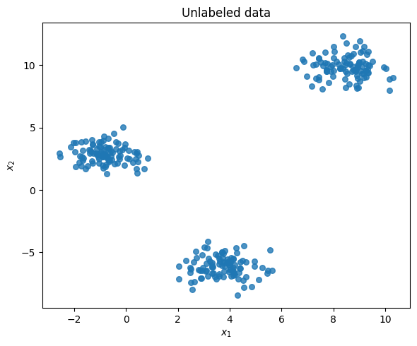
centers_manual, labels_manual, history = fit_kmeans_manual(X, K=3, max_iter=15, seed=4)
objective_history = pd.DataFrame({
"iteration": [h["iteration"] for h in history],
"objective": [h["objective"] for h in history]
})
display(objective_history)| iteration | objective | |
|---|---|---|
| 0 | 0 | 11496.551956 |
| 1 | 1 | 7082.449222 |
| 2 | 2 | 7081.502741 |
| 3 | 3 | 7080.816230 |
| 4 | 4 | 7080.456869 |
| 5 | 5 | 7080.207283 |
| 6 | 6 | 7079.759331 |
| 7 | 7 | 7079.652713 |
| 8 | 8 | 7079.628955 |
| 9 | 9 | 7079.628955 |
def plot_kmeans_state(X, state, title=None):
labels = state["labels"]
centers = state["centers"]
plt.figure(figsize=(6, 5))
plt.scatter(X[:, 0], X[:, 1], c=labels, s=30, alpha=0.75)
plt.scatter(
centers[:, 0], centers[:, 1],
marker="X", s=220, edgecolor="black", linewidth=1.5
)
plt.xlabel("$x_1$")
plt.ylabel("$x_2$")
if title is not None:
plt.title(title)
plt.tight_layout()
plt.show()plot_kmeans_state(X, history[0], title="Initialization")
plot_kmeans_state(X, history[1], title="After one update")
plot_kmeans_state(X, history[-1], title="Final clustering")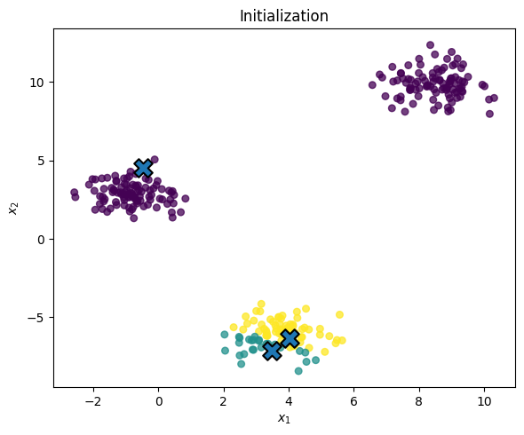
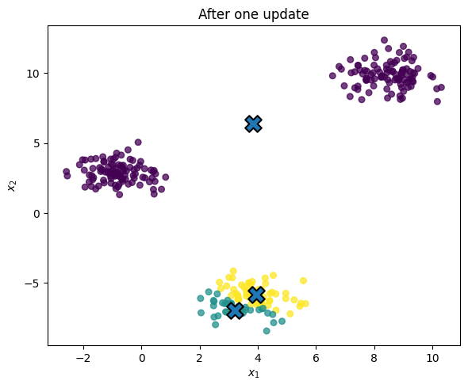
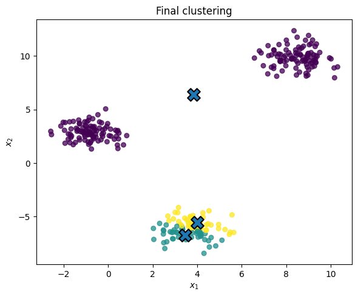
from ipywidgets import interact, IntSlider
from IPython.display import display
def plot_kmeans_state_interactive(t):
state = history[t]
labels = state["labels"]
centers = state["centers"]
plt.figure(figsize=(6, 5))
plt.scatter(
X[:, 0],
X[:, 1],
c=labels,
s=30,
alpha=0.75
)
plt.scatter(
centers[:, 0],
centers[:, 1],
marker="X",
s=220,
edgecolor="black",
linewidth=1.5
)
plt.xlabel("$x_1$")
plt.ylabel("$x_2$")
if t == 0:
title = "Initialization"
elif t == len(history) - 1:
title = f"Final clustering, iteration {t}"
else:
title = f"After iteration {t}"
plt.title(title)
# Keep axes fixed as the slider moves
x_pad = 0.5
y_pad = 0.5
plt.xlim(X[:, 0].min() - x_pad, X[:, 0].max() + x_pad)
plt.ylim(X[:, 1].min() - y_pad, X[:, 1].max() + y_pad)
plt.tight_layout()
plt.show()
interact(
plot_kmeans_state_interactive,
t=IntSlider(
value=0,
min=0,
max=len(history) - 1,
step=1,
description="iteration"
)
);Huh, that sucked, based on the bad initialization. Let’s try again:
centers_manual, labels_manual, history = fit_kmeans_manual(X, K=3, max_iter=50, seed=9879)
objective_history = pd.DataFrame({
"iteration": [h["iteration"] for h in history],
"objective": [h["objective"] for h in history]
})
display(objective_history)| iteration | objective | |
|---|---|---|
| 0 | 0 | 10303.479067 |
| 1 | 1 | 2813.250060 |
| 2 | 2 | 363.573099 |
| 3 | 3 | 363.573099 |
That looks much better!
from ipywidgets import interact, IntSlider
from IPython.display import display
def plot_kmeans_state_interactive(t):
state = history[t]
labels = state["labels"]
centers = state["centers"]
plt.figure(figsize=(6, 5))
plt.scatter(
X[:, 0],
X[:, 1],
c=labels,
s=30,
alpha=0.75
)
plt.scatter(
centers[:, 0],
centers[:, 1],
marker="X",
s=220,
edgecolor="black",
linewidth=1.5
)
plt.xlabel("$x_1$")
plt.ylabel("$x_2$")
if t == 0:
title = "Initialization"
elif t == len(history) - 1:
title = f"Final clustering, iteration {t}"
else:
title = f"After iteration {t}"
plt.title(title)
# Keep axes fixed as the slider moves
x_pad = 0.5
y_pad = 0.5
plt.xlim(X[:, 0].min() - x_pad, X[:, 0].max() + x_pad)
plt.ylim(X[:, 1].min() - y_pad, X[:, 1].max() + y_pad)
plt.tight_layout()
plt.show()
interact(
plot_kmeans_state_interactive,
t=IntSlider(
value=0,
min=0,
max=len(history) - 1,
step=1,
description="iteration"
)
);K-means can be quite sentitive to the initialization of the clusters, unfortunately. This is why algorithms often have multiple starts and then pick the best one.
23.4 Using a package
For real work, it is better to use a tested implementation. In sklearn, the main class is KMeans.
The most important arguments are:
n_clusters: the number of clusters \(K\);n_init: the number of random initializations to try;random_state: used for reproducibility.
kmeans = KMeans(n_clusters=3, n_init=10, random_state=657677)
labels = kmeans.fit_predict(X)
centers = kmeans.cluster_centers_
print("Inertia:", round(kmeans.inertia_, 2))
print("Cluster sizes:")
print(pd.Series(labels).value_counts().sort_index())Inertia: 363.57
Cluster sizes:
0 100
1 100
2 100
Name: count, dtype: int64plt.figure(figsize=(6, 5))
plt.scatter(X[:, 0], X[:, 1], c=labels, s=30, alpha=0.75)
plt.scatter(
centers[:, 0], centers[:, 1],
marker="X", s=220, edgecolor="black", linewidth=1.5
)
plt.xlabel("$x_1$")
plt.ylabel("$x_2$")
plt.title("K-means clustering with $K=3$")
plt.tight_layout()
plt.show()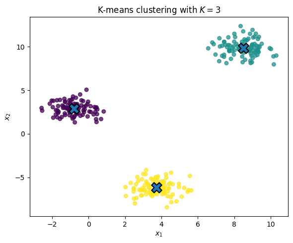
Cluster labels are arbitrary. If we re-run the algorithm, cluster 0 might become cluster 2, and cluster 2 might become cluster 1. The labels are just names for groups.
What matters is the partition of the observations, not the numerical values of the labels.
23.5 Choosing the number of clusters
K-means requires us to choose \(K\). This is part of the modeling decision.
The objective always decreases as \(K\) increases, because more centroids can only make it easier to fit the data. In the extreme case, if \(K=N\), each point can be its own centroid and the objective is zero.
So we cannot simply choose the \(K\) with the smallest objective. Two common diagnostics are:
- the elbow plot, which looks for a point where the objective stops decreasing quickly;
- the silhouette score, which measures how separated the clusters are relative to their within-cluster spread.
These are heuristics, and there are many more of them.
K_values = range(1, 9)
inertias = []
silhouettes = []
for K in K_values:
km = KMeans(n_clusters=K, n_init=3, random_state=657677)
labels_K = km.fit_predict(X)
inertias.append(km.inertia_)
if K >= 2:
silhouettes.append(silhouette_score(X, labels_K))
else:
silhouettes.append(np.nan)
k_table = pd.DataFrame({
"K": list(K_values),
"inertia": inertias,
"silhouette": silhouettes
})
display(k_table)| K | inertia | silhouette | |
|---|---|---|---|
| 0 | 1 | 17568.182186 | NaN |
| 1 | 2 | 5468.882158 | 0.685324 |
| 2 | 3 | 363.573099 | 0.869104 |
| 3 | 4 | 316.098425 | 0.680463 |
| 4 | 5 | 280.081352 | 0.493738 |
| 5 | 6 | 239.962659 | 0.306574 |
| 6 | 7 | 208.470522 | 0.325842 |
| 7 | 8 | 186.192329 | 0.333558 |
plt.figure(figsize=(6, 4))
plt.plot(k_table["K"], k_table["inertia"], marker="o")
plt.xlabel("number of clusters $K$")
plt.ylabel("inertia")
plt.title("Elbow plot")
plt.tight_layout()
plt.show()
plt.figure(figsize=(6, 4))
plt.plot(k_table["K"], k_table["silhouette"], marker="o")
plt.xlabel("number of clusters $K$")
plt.ylabel("silhouette score")
plt.title("Silhouette score by $K$")
plt.tight_layout()
plt.show()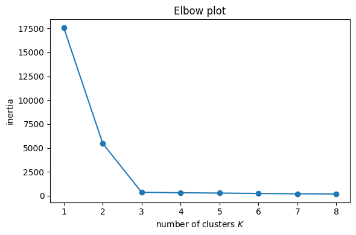
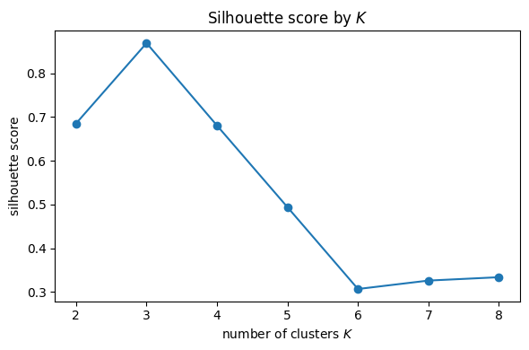
23.6 Scaling matters
K-means is based on Euclidean distance:
\[ \|x_n - \mu_k\|_2^2= \sum_{j=1}^D (x_{nj}-\mu_{kj})^2. \]
If one variable has a much larger scale than the others, it can dominate the distance calculation. For this reason, it is common to standardize the columns of \(X\) before applying k-means, e.g., \(z\)-scoring them:
\[ \frac{X_j - \bar X_j}{s_j}, \]
so that each column has mean zero and standard deviation one.
import numpy as np
import matplotlib.pyplot as plt
from sklearn.cluster import KMeans
from sklearn.preprocessing import StandardScaler
from sklearn.metrics import adjusted_rand_score
# Create data where the meaningful clusters differ mostly in x_2
rng = np.random.default_rng(9987)
n_per_cluster = 120
X0 = np.column_stack([
rng.normal(loc=0, scale=3.0, size=n_per_cluster),
rng.normal(loc=-3, scale=0.35, size=n_per_cluster)
])
X1 = np.column_stack([
rng.normal(loc=0, scale=3.0, size=n_per_cluster),
rng.normal(loc=0, scale=0.35, size=n_per_cluster)
])
X2 = np.column_stack([
rng.normal(loc=0, scale=3.0, size=n_per_cluster),
rng.normal(loc=3, scale=0.35, size=n_per_cluster)
])
X_scale_demo = np.vstack([X0, X1, X2])
true_labels = np.repeat([0, 1, 2], n_per_cluster)
# Distort the scale of the first coordinate
X_scaled_bad = X_scale_demo.copy()
X_scaled_bad[:, 0] *= 100# plot with standardization
plt.figure(figsize=(6, 5))
plt.scatter(
X_scaled_bad[:, 0],
X_scaled_bad[:, 1],
c=true_labels,
s=30,
alpha=0.75
)
plt.xlabel("distorted $x_1$")
plt.ylabel("$x_2$")
plt.title("True cluster structure")
plt.tight_layout()
plt.show()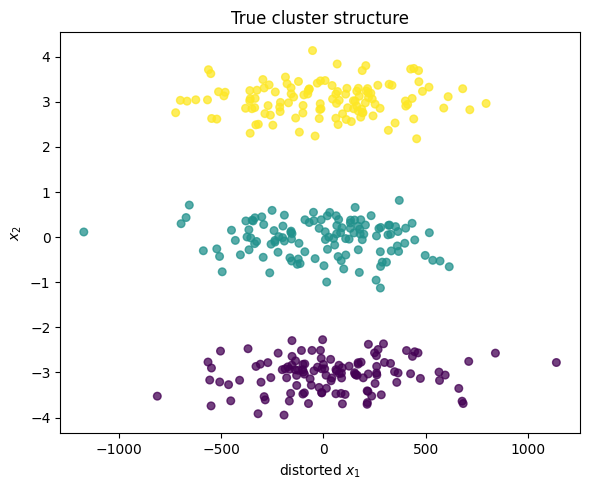
# K-means without standardization
km_raw = KMeans(n_clusters=3, n_init=50, random_state=9987)
labels_raw_scale = km_raw.fit_predict(X_scaled_bad)
# K-means after standardization
scaler = StandardScaler()
X_standardized = scaler.fit_transform(X_scaled_bad)
km_standardized = KMeans(n_clusters=3, n_init=50, random_state=9879)
labels_standardized = km_standardized.fit_predict(X_standardized)# Plot k-means without standardization
plt.figure(figsize=(6, 5))
plt.scatter(
X_scaled_bad[:, 0],
X_scaled_bad[:, 1],
c=labels_raw_scale,
s=30,
alpha=0.75
)
plt.xlabel("distorted $x_1$")
plt.ylabel("$x_2$")
plt.title("K-means without standardization")
plt.tight_layout()
plt.show()
# Plot k-means after standardization
plt.figure(figsize=(6, 5))
plt.scatter(
X_scaled_bad[:, 0],
X_scaled_bad[:, 1],
c=labels_standardized,
s=30,
alpha=0.75
)
plt.xlabel("distorted $x_1$")
plt.ylabel("$x_2$")
plt.title("K-means after standardization")
plt.tight_layout()
plt.show()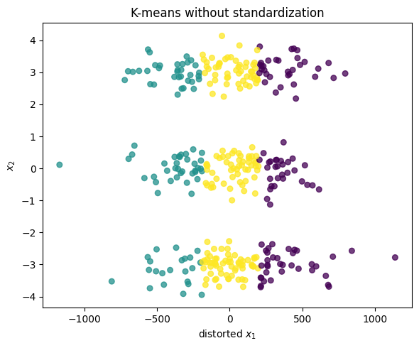
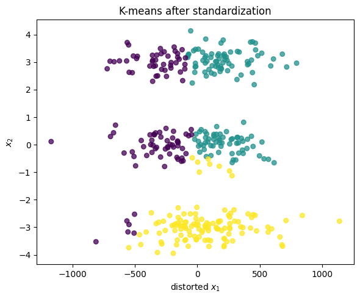
The point is not that standardization is always correct. The point is that k-means is sensitive to the scale on which variables are measured. If the units are arbitrary or incomparable, standardization is usually a sensible default.
23.7 When k-means works well, and when it does not
K-means tends to work well when clusters are roughly:
- compact;
- spherical or blob-like;
- similar in size;
- separated in Euclidean distance.
It can work poorly when clusters are:
- non-convex;
- strongly overlapping;
- very different in size or density;
- affected by outliers.
As an exaple consider the moons or “swiss roll” data:
X_moons, y_moons = make_moons(n_samples=400, noise=0.07, random_state=657677)
km_moons = KMeans(n_clusters=2, n_init=10, random_state=657677)
labels_moons = km_moons.fit_predict(X_moons)
plt.figure(figsize=(6, 5))
plt.scatter(X_moons[:, 0], X_moons[:, 1], c=labels_moons, s=25, alpha=0.8)
plt.xlabel("$x_1$")
plt.ylabel("$x_2$")
plt.title("K-means on non-convex clusters")
plt.tight_layout()
plt.show()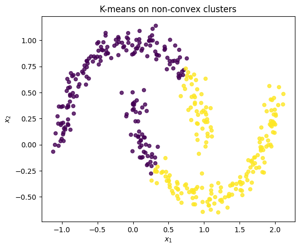
24 Real data example: wine chemistry data
Now consider a real data example. The wine data contain chemical measurements on wines from three cultivars. We will ignore the class labels when fitting k-means, then use them afterward only as a diagnostic.
Because the variables are measured on different scales, we standardize the features before clustering.
wine = load_wine()
X_wine_raw = pd.DataFrame(wine.data, columns=wine.feature_names)
target = wine.target
target_names = wine.target_names
print("Shape:", X_wine_raw.shape)
display(X_wine_raw.head())Shape: (178, 13)| alcohol | malic_acid | ash | alcalinity_of_ash | magnesium | total_phenols | flavanoids | nonflavanoid_phenols | proanthocyanins | color_intensity | hue | od280/od315_of_diluted_wines | proline | |
|---|---|---|---|---|---|---|---|---|---|---|---|---|---|
| 0 | 14.23 | 1.71 | 2.43 | 15.6 | 127.0 | 2.80 | 3.06 | 0.28 | 2.29 | 5.64 | 1.04 | 3.92 | 1065.0 |
| 1 | 13.20 | 1.78 | 2.14 | 11.2 | 100.0 | 2.65 | 2.76 | 0.26 | 1.28 | 4.38 | 1.05 | 3.40 | 1050.0 |
| 2 | 13.16 | 2.36 | 2.67 | 18.6 | 101.0 | 2.80 | 3.24 | 0.30 | 2.81 | 5.68 | 1.03 | 3.17 | 1185.0 |
| 3 | 14.37 | 1.95 | 2.50 | 16.8 | 113.0 | 3.85 | 3.49 | 0.24 | 2.18 | 7.80 | 0.86 | 3.45 | 1480.0 |
| 4 | 13.24 | 2.59 | 2.87 | 21.0 | 118.0 | 2.80 | 2.69 | 0.39 | 1.82 | 4.32 | 1.04 | 2.93 | 735.0 |
wine_cluster_pipe = make_pipeline(
StandardScaler(),
KMeans(n_clusters=3, n_init=20, random_state=987003)
)
wine_clusters = wine_cluster_pipe.fit_predict(X_wine_raw)
wine_kmeans = wine_cluster_pipe.named_steps["kmeans"]
print("Inertia:", kmeans.inertia_)
print("Cluster sizes:")
print(pd.Series(wine_clusters).value_counts().sort_index())Inertia: 363.5730992306482
Cluster sizes:
0 65
1 51
2 62
Name: count, dtype: int64X_wine_standardized = wine_cluster_pipe.named_steps["standardscaler"].transform(X_wine_raw)
print("Silhouette score:")
print(round(silhouette_score(X_wine_standardized, wine_clusters), 4))
print("Adjusted Rand index, using the true cultivar labels only for evaluation:")
print(round(adjusted_rand_score(target, wine_clusters), 4))Silhouette score:
0.2849
Adjusted Rand index, using the true cultivar labels only for evaluation:
0.8975The adjusted Rand index uses the known cultivar labels, so it is not an unsupervised fitting criterion. It is included here only because this dataset happens to have labels. In a genuine unsupervised problem, we usually do not have such labels.
We can also make a “confusion-like” matrix:
cluster_vs_class = pd.crosstab(
pd.Series(wine_clusters, name="cluster"),
pd.Series(target, name="cultivar")
)
cluster_vs_class.columns = target_names
display(cluster_vs_class)| class_0 | class_1 | class_2 | |
|---|---|---|---|
| cluster | |||
| 0 | 0 | 65 | 0 |
| 1 | 0 | 3 | 48 |
| 2 | 59 | 3 | 0 |
24.1 Visualizing the wine clusters with PCA
The wine data have more than two variables, so we cannot directly plot the fitted clusters in the original feature space. A common approach is to use PCA only for visualization.
The workflow is:
- standardize the variables;
- fit k-means in the standardized feature space;
- project the standardized data onto the first two PCs;
- color the points by their k-means cluster assignments.
Note: The PCA projection is only a visualization. The clustering above was fit using all standardized variables.
pca = PCA(n_components=2)
Z_wine = pca.fit_transform(X_wine_standardized)
plt.figure(figsize=(7, 5))
plt.scatter(Z_wine[:, 0], Z_wine[:, 1], c=wine_clusters, s=35, alpha=0.8)
plt.xlabel(f"PC1 ({pca.explained_variance_ratio_[0]:.1%} variance)")
plt.ylabel(f"PC2 ({pca.explained_variance_ratio_[1]:.1%} variance)")
plt.title("Wine data: k-means clusters shown in PCA space")
plt.tight_layout()
plt.show()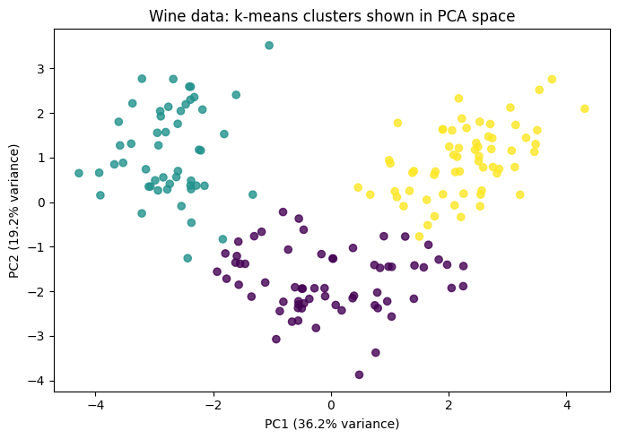